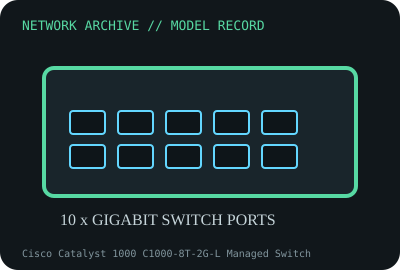

[ MODEL-SPECIFIC NETWORK HARDWARE RECORD ]
Cisco Catalyst 1000 C1000-8T-2G-L Managed Switch
Fanless fixed Layer 2 switch with eight Gigabit access ports and two SFP/RJ-45 combo uplinks. Specifications are tied to this named product; confirm the physical label, revision and source documentation.

IDENTIFICATION: Verify exact PID/model, revision, label and host support. The catalog separates nominal PHY/link specifications from measured throughput; no benchmark is asserted unless explicitly recorded.
Model-specific specifications and compatibility
| Subcategory | Managed switches |
|---|---|
| Exact product/model | Cisco Catalyst 1000 C1000-8T-2G-L Managed Switch |
| Bus, ports and physical interface | Eight 10/100/1000BASE-T RJ-45 data ports; two fixed 1GbE combo uplinks (each supports SFP or RJ-45 as documented); no PoE. |
| PHY, radio or optical interface | Cisco Catalyst 1000 managed Layer 2 switch operating Cisco IOS; CLI, on-box web UI, SNMP, VLAN, QoS, ACL and port-security features depend on software configuration. |
| Nominal rate (not measured) | 20Gb/s nominal switching capacity for eight Gigabit ports plus two Gigabit uplinks in the manufacturer platform family; not a measured flow/application throughput. |
| Measured throughput | No throughput bench result is claimed. Record firmware, configuration, packet size, test port pairs and full/half-duplex constraints for a test. |
| Driver, OS and firmware | Cisco IOS image / web management and Cisco support matrix are model/software-release specific. No OS NIC driver applies; consult product release notes and end-of-support status. |
| Platform/media compatibility | Use matching SFP modules or copper combo interfaces per port rules; combo ports share port resources and cannot be counted as two independent links each. This SKU is data-only, fanless and rack/wall/desktop fit depends on kit. |
| Variant warning | C1000-8T-2G-L is not C1000-8P-E-2G-L, C1000-8FP-2G-L or an 8T-E variant. Exact uplink combo, PoE, hardware and Cisco IOS support differ by PID. |
Revision, operation and measurement notes
C1000-8T-2G-L is not C1000-8P-E-2G-L, C1000-8FP-2G-L or an 8T-E variant. Exact uplink combo, PoE, hardware and Cisco IOS support differ by PID.
Cisco IOS image / web management and Cisco support matrix are model/software-release specific. No OS NIC driver applies; consult product release notes and end-of-support status.
No throughput bench result is claimed. Record firmware, configuration, packet size, test port pairs and full/half-duplex constraints for a test.
Archival, ESD and preservation notes
Capture PID, serial, MAC, IOS image, configuration provenance (secrets removed), SFP identities and accessory kit. Shut down/unplug before service; ESD-safe handling for removable SFPs and board service.
Retain source provenance and the revision/date of each supporting document. Store public records without credentials, personal information or other secrets.
Primary manufacturer and standards sources
- Cisco Catalyst 1000 Series official data sheetPrimary manufacturer or standards reference; confirm exact part label, revision, and platform qualification.
- Cisco Catalyst 1000 software and supportPrimary manufacturer or standards reference; confirm exact part label, revision, and platform qualification.
- IEEE 802.3 Ethernet standardsPrimary manufacturer or standards reference; confirm exact part label, revision, and platform qualification.
Manufacturer source links are provided for the stated model or exact product family; use the board label and the official revision-specific compatibility list for final qualification.